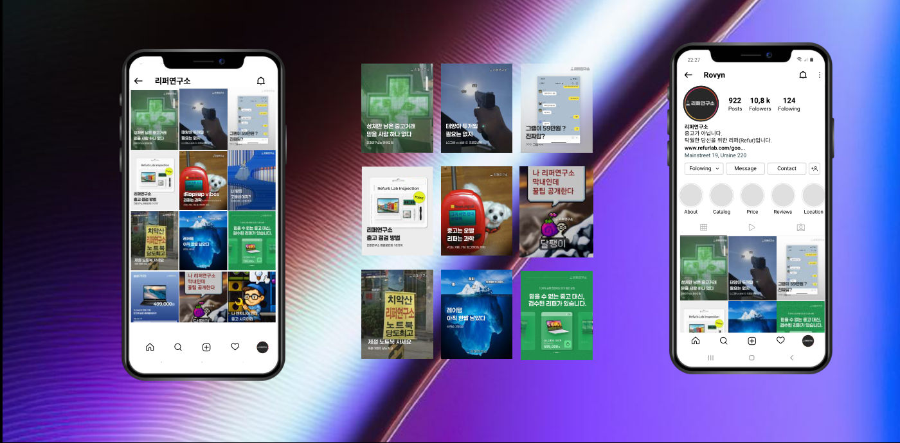

IT 리퍼브 브랜드를 정보형 매거진 콘텐츠로 리브랜딩해 구매 전환율을 33% 끌어올렸습니다.
핵심 성과
+33%구매 전환율
브랜드
리퍼연구소 (IT 리퍼브)
타깃
가성비와 재미를 함께 찾는 MZ, IT 소비자
역할
- 1브랜드 세계관‘괴짜 엔지니어들의 연구소’ 콘셉트 설정
- 2매거진형 포맷“배터리 오래 쓰는 법” 같은 유용한 정보 콘텐츠
- 3전환 설계콘텐츠 마지막에 클릭형 가격 링크 노출
성과
- +33%구매 전환율 상승
- 5K기존 계정 게시물 조회수
- 30건하루 평균 문의
문제와 해결
문제콘텐츠 해결
- 누가 수리하는지 몰라 생기는 불안엔지니어의 업무 일상과 비하인드 공개
- 일방적인 제품 홍보정보와 마케팅을 결합한 매거진형 포맷
- 딱딱하고 차가운 IT 이미지유머와 인간미를 더한 브랜드 톤
작업물
